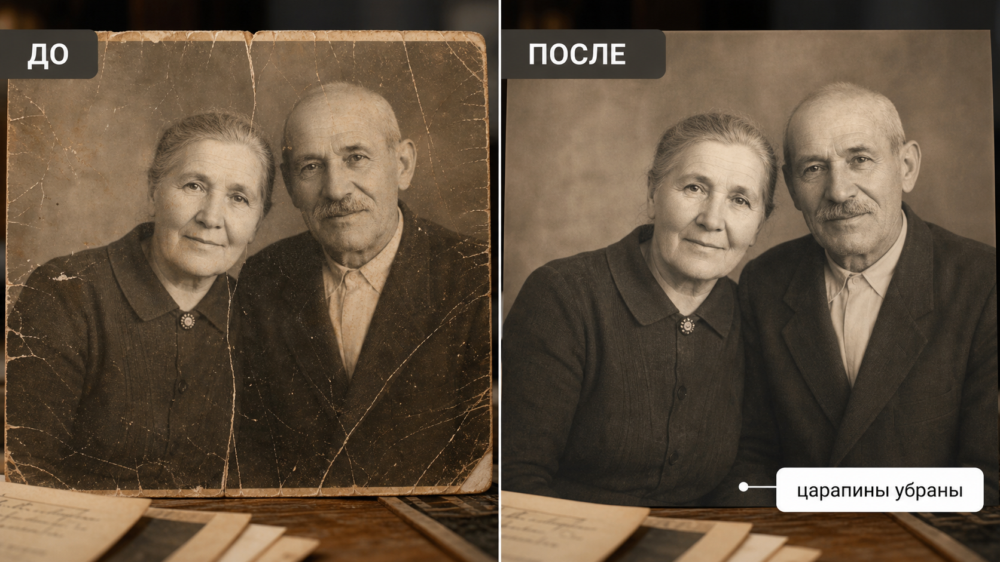

Промтзилла
Реставрация старых снимков требует осторожности: задача не омолодить людей и не придумать новые детали, а аккуратно восстановить повреждения.

Пошаговая инструкция
- 1Отсканируй фото или сфотографируй его без бликов, с хорошим ровным светом.
- 2Загрузи файл в инструмент редактирования фото онлайн.
- 3Вставь промт и попроси убрать только повреждения, сохранив лица и возраст.
- 4Если фото сильно повреждено, сначала восстанавливай общую чистоту, потом отдельные фрагменты.
- 5Сравни результат с оригиналом: идентичность людей важнее идеальной гладкости.
Пример результата
На обложке показан сценарий до/после: исходное фото и результат, который можно получить через инструмент редактирования фото онлайн.
Промт
RU
Восстанови старую фотографию. Сделай аккуратную реставрацию: — убери царапины, заломы, пятна, пыль, трещины и шум; — восстанови контраст, резкость и читаемость деталей; — сохрани лица, возраст, мимику, одежду и позы людей; — не омолаживай, не меняй черты лица и не дорисовывай новые детали без необходимости; — сохрани историческую атмосферу снимка; — не делай кожу пластиковой и не превращай фото в современную глянцевую съёмку. Если часть изображения повреждена слишком сильно, восстанови её осторожно и отдельно укажи, где результат является предположением.
EN
Restore the old photograph. Make a careful restoration: — remove scratches, folds, stains, dust, cracks, and noise; — restore contrast, sharpness, and detail readability; — preserve faces, age, expressions, clothing, and poses of people; — do not make people younger, do not change facial features, and do not invent new details unless necessary; — preserve the historical atmosphere of the photo; — do not make skin plastic or turn the image into a modern glossy photoshoot. If part of the image is too damaged, restore it cautiously and state where the result is an assumption.
Важно
Всегда сохраняй оригинал старого снимка. Нейросеть может правдоподобно дорисовать детали, которых на фото не было, поэтому важные семейные архивы лучше реставрировать поэтапно.
Теги